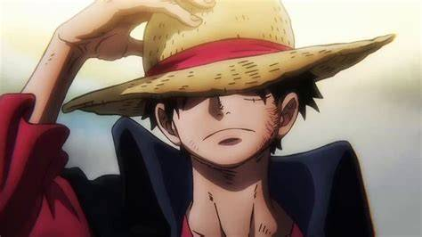
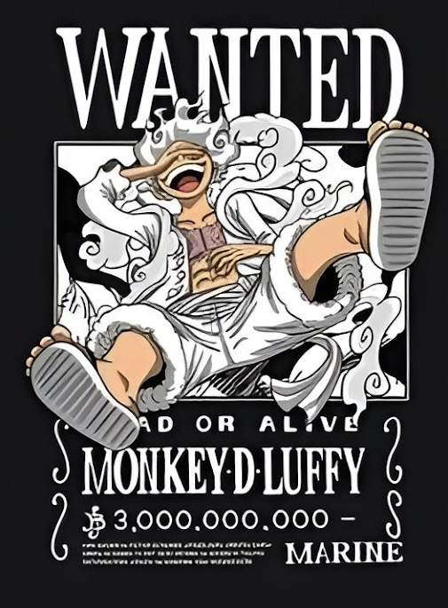
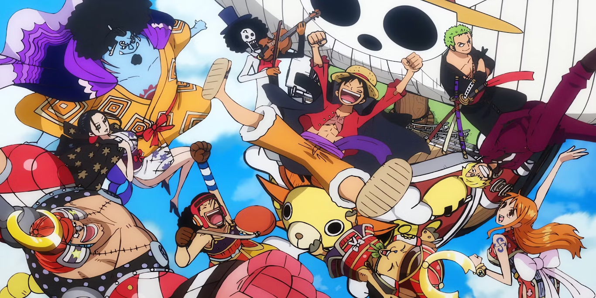
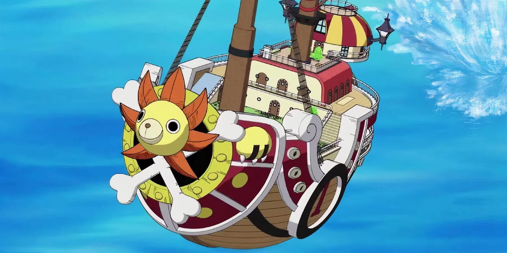

Monkey D. Luffy
Captain of the Straw Hat Pirates
One Piece is the name the world gave to all the treasure gained by the Pirate King Gol D. Roger. At least a portion of it once belonged to Joy Boy 800 years ago, during the Void Century. The treasure is said to be of unimaginable value, and is supposedly located on Laugh Tale, the final island of the Grand Line. The One Piece is the driving goal of Monkey D. Luffy and his crew, as well as many other pirates, All seeking to claim the treasure in order to become the next Pirate King, Following Roger's final words at his world changing execution.


Captain of the Straw Hat Pirates

Main Crew Members
Monkey D. Luffy – Captain
Roronoa Zoro – Swordsman
Nami – Navigator
Usopp – Sniper
Sanji – Cook
Tony Tony Chopper – Doctor
Nico Robin – Archaeologist
Franky – Shipwright
Brook – Musician
Jinbe – Helmsman
Are the Crew United by Friendship and Dreams.

Who is Thousand Sunny in One Piece?
The Thousand Sunny, or simply Sunny, is the current ship of the Straw Hat Pirates, Succeeding the destroyed Going Merry. It has served as their Main Transportation through most of the Grand Line, from Water 7 well into the New World. The Sunny is a brigantine-type Ship designed and built by Franky, with help from Iceburg and many other master shipwrights from Galley-La. Built from Adam Wood, it is a magnificent ship of the finest craftsmanship at least double the size of the Going Merry. Its features include practically all of the various requests the Straw Hats had before arriving in Water 7.
Travel Across the Grand Line,Battle Powerful Pirates, Discover Mysterious Islands, and Chase the Greatest Treasure Ever Known.
Address:Lambakin Street #1218, Marilao, Bulacan, Philippines
Email:onepiecefan@gmail.com
FB:One Piece Fan Page
Dial:63939028521